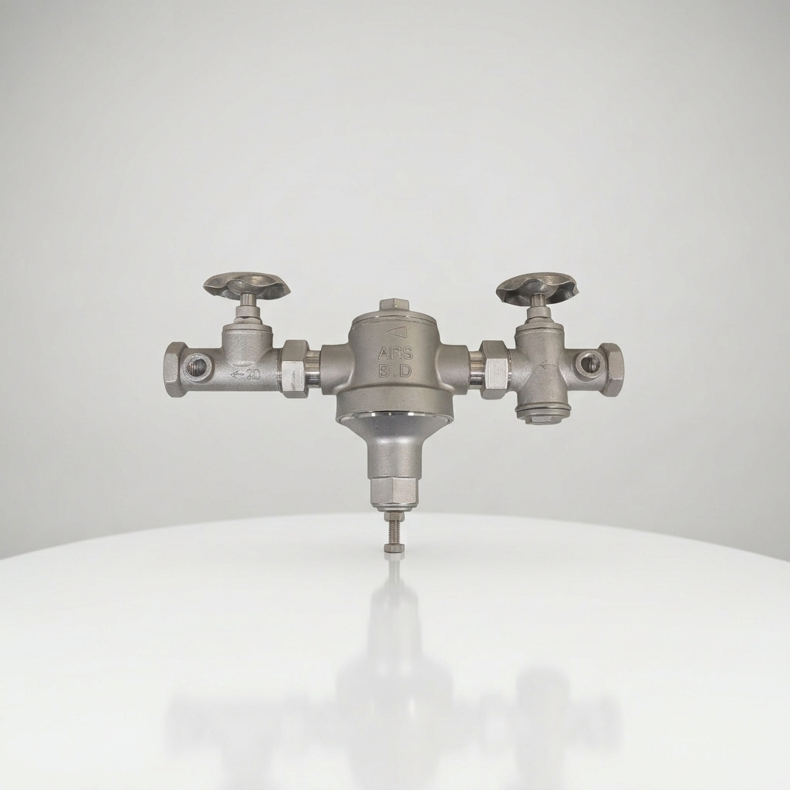

提供傳統直動式與子母式減壓閥，滿足各種水壓穩定與安全防護需求

傳統式減壓閥採用直動式彈簧膜片結構，透過出口壓力回饋直接調節閥門開度。結構簡潔、反應靈敏，是各類建築給水系統中最經典且可靠的選擇。
構造簡單少故障、維護容易、體積小巧不占空間。
直動式感應，流體壓力變化時反應迅速，調壓過程直觀穩定。
住宅給水支管、中小型大樓給水管路、分戶減壓與常規水電工程。
📏 各種口徑尺寸、壓力等級與詳細規格，歡迎洽詢專人服務：
子母式減壓閥由「主閥」與「子閥」組合而成。利用微小的先導閥精準感應管路壓力微調，再帶動主閥進行大流量穩定調壓，專為高壓差與嚴苛環境設計。
調壓極度精準，在大流量或水壓劇烈波動時，仍能保持出口壓力恆定不漂移。
子閥反應靈敏，能精準微調主閥開度，維持出口水壓恆定，並有效延長主閥膜片與密封件壽命。
高層建築給水主幹管、高壓給水系統、消防泵浦中繼水箱（機房）與工業廠房供水管路。
📏 各種口徑尺寸、壓力等級與詳細規格，歡迎洽詢專人服務：